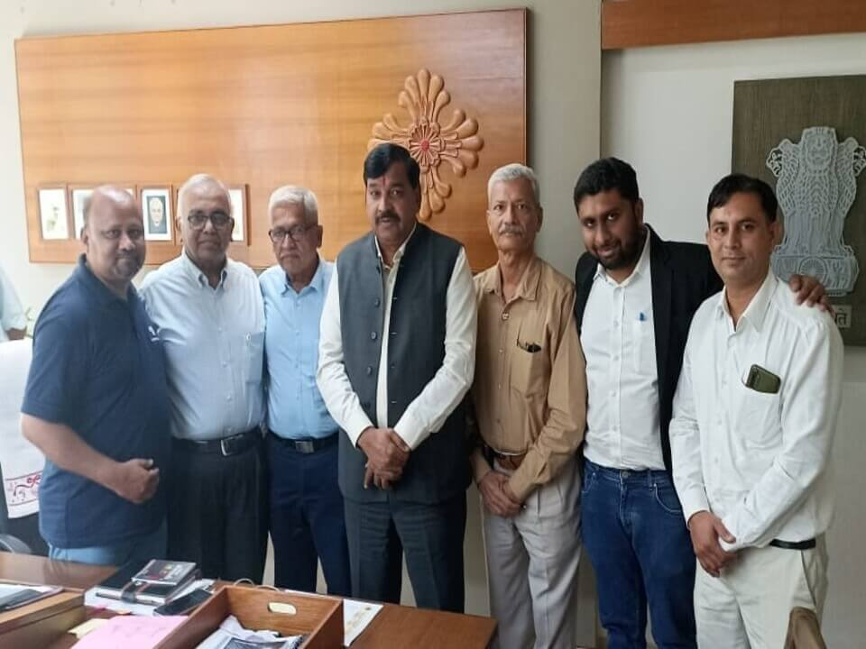

Gujarat Rajya Gram Vikas Samiti
Gujarat Rajya Gram Vikas Samiti (GRGVS)’s areas of operation comprises of all districts of Gujarat State. GRGVS has undertaken various activities/projects for rural infrastructure development, drinking water, sanitation, environment awareness, irrigation, rainwater harvesting, women empowerment, education, sustainable development, livelihood schemes and relief works.
Gujarat Rajya Gram Vikas Samiti (GRGVS) is a registered NGO since 1988.
- Public Trust Registration no is F/308 under Bombay Public Trust Act 1950
- Society Registration no. is GUJ/321 under society registration act 1860
- GRGVS has 12AA and 80G registration under IT Act, 1961
- Our CSR Registration Number is CSR 00014330 under the Central Government
- Our FCRA registration no. is 41910403
- We have registration with NITI Aayog and our Unique Darpan ID is GJ/2018/0217432

Our Vision
“Committed for sustainable development of our Nation and striving for ameliorating socio-economic conditions of underprivileged for better tomorrow.”
Our Mission
- To contribute in rural infrastructure & community development
- To make available drinking water, sanitation.
- To develop land, water resource & irrigation systems for agriculture.
- To promote women empowerment and gender equality.
- To promote child education, healthcare and sports in youth.
- To empower the marginalized by generating sustainable livelihood & skill dev.
- To promote sports, equality for diff. abled & support for elderly & disabled.
- To provide disaster relief.

Origin, inspiration and spirit of the organization:
Taking inspiration from the ideals of Mahatma Gandhi and the leadership of Morarji Desai, the founders of the Gujarat State Gram Vikas Samiti started a campaign for the upliftment and empowerment of the rural communities of Gujarat. Guided by the principles of non-violence, self-reliance and social justice, they dedicated themselves to meeting the immediate needs of the underprivileged and promoting sustainable development in rural areas.
Source of inspiration: (1) Mahatma Gandhi (2) Shri Morarji Desai (3) Shri Sanat Mehta (4) Shri Ishwarbhai Patel (5) Shri Maganbhai Patel (6) Shri Babubhai Vasana Wala
The foundation of Gujarat State Gram Vikas Samiti lies in the steadfast commitment of its founders, Shri Ibrahim Mansuri, Shri Sankarbhai Patel, Chandrasinh Jhala and Ramchandra Soni. These visionaries were driven by an inner passion for social upliftment and dedication to serving the underprivileged. Their families have also played an important role in supporting their best efforts, sharing their values and instilling in them a spirit of selfless service.
Our Founder with Shri Narendra Modiji
Guided by the principles of Gandhian philosophy, the founders of the Gujarat State Gram Vikas Samiti adopted simplicity and strict discipline in their personal lives. They supported the use of khadi, a symbol of self-reliance and empowerment, and explained the importance of living for a cause greater than oneself in their families.
Even today, the founders are active sources of guidance and inspiration for the organization. His legacy lives on in the countless lives he touched and the positive impact he made on the rural communities of Gujarat. His steadfast commitment to social justice and his unwavering belief in the power of collective action serve as a guiding light for the Gujarat State Gram Vikas Samiti in its ongoing campaign to make a difference in the world.

GRGVS Approach
GRGVS has collaborated with various Boards and Nigams of Government of India, Government of Gujarat, District Administrations, Corporates, CSR companies, NGOs and well-wishers. We have completed several projects/welfare programs across the state of Gujarat in urban, rural, interior areas and Aspirational districts benefitting lakhs of people particularly poor, farmers, women, and children, tribal and other backward communities.
GRGVS provides one stop solution for Field Survey, Coordination with Government and non-government organizations, identification of beneficiaries, implementing all types of CSR Projects, providing guidance and support to complete CSR Programmes as per CSR Policy and Guidelines.

Meeting with Shri Kuberbhai Dindor, Cabinet Minister
(Tribal Development & Education) for our Education initiatives
Sector / Key Issues
| CSR Projects – as per CSR Guidelines. | Integrated Rural Development Projects |
| Rain Water Harvesting, Drinking Water and Irrigation | Sustainable Infrastructure and Community Development |
| Women Empowerment, Gender Equality and Child Dev. | Child Education, Sports. Support to disabled and elderly. |
| Aspirational District Programme – NITI Aayog. | Total Sanitation Program and Swachh Bharat Mission |
| Renewable Energy, Environment and Sustainability | Agriculture and Animal Husbandry |
| Covid/Disaster Relief Works | Healthcare & Family Welfare |
| Skill Development & livelihood support | Micro Finance (SHGs) |
| Social Justice and empowerments | |
Details of Achievement
| 1. Completed CSR Projects in Aspirational District Dahod | 2. Construction of 50 Anganwadi Centres with ICDS |
| 3. Watershed Projects for integrated development | 4. Check dams and Recharge Wells |
| 5. Rainwater harvesting structures for drinking water | 6. School Sanitation Programs in >400 schools |
| 7. Household Latrine, Total Sanitation & community toilets | 8. Rural Development, Land & water resource projects |
| 9. SHG Projects for Micro Finance | 10. Public co-operation program – CAPART |
| 11. Environment Awareness Campaign with VSDC / NFD | 12. Mass Plantation |
| 13. Earthquake rehabilitation with donors | 14. Covid Relief Works |
Our Team
Mr. Ibrahim U Mansuri
Master of Social Work (M.S.W), Gujarat Vidyapith. Bachelor of Arts (B.A)
Mr. Rafik Mansuri
PGPX IIM Ahmedabad, Certified CSR Professional, Master of Engineering
Mr. Chandrasingh Zala
Mr. Shankarbhai Patel
Mr. Irfan Mansuri
Master of Social Work (M.S.W)
Mr. Ramkrishna Soni
Mr. Kaduji Thakor
Mr. Kasim Rangwala
Bachelor of Engineering (B.E)
Ms. Madhuben Thankor
Mr. Ratubhai Patel
Mr. Rajak Mansuri
Bachelor of Arts (B.A)
Ms. Salmaben
Mr. Dahyabhai Marivad
Mr. Arvind Bariya
Mr. Mahesh Marivad
Ms. Karishma
Master of Science (Nursing)
Ms. Firoza
Master of Social Work (M.S.W)
Mr. Muzammil Mansuri
Master of Civil Engineering
Mr. Dahyabhai Bhubhani
INTERNS
VOLUNTEERS
Our dedicated support system
Our Certifications & CSR
We are a trusted partner for CSR initiatives with FCRA, CSR 1, 12AA, and 80G certifications under the Income Tax Act. Registered with NITI Aayog, we ensure transparent implementation and measurable impact in all our collaborative projects.